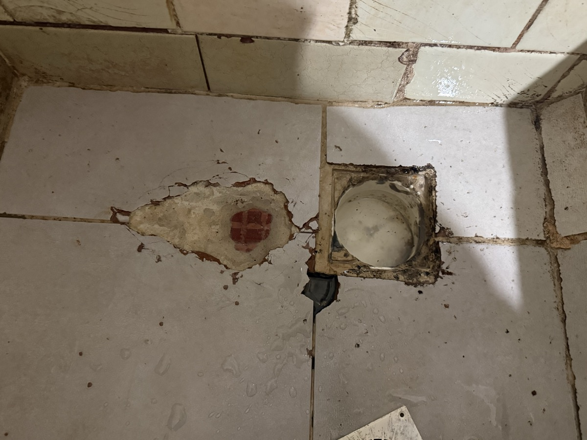
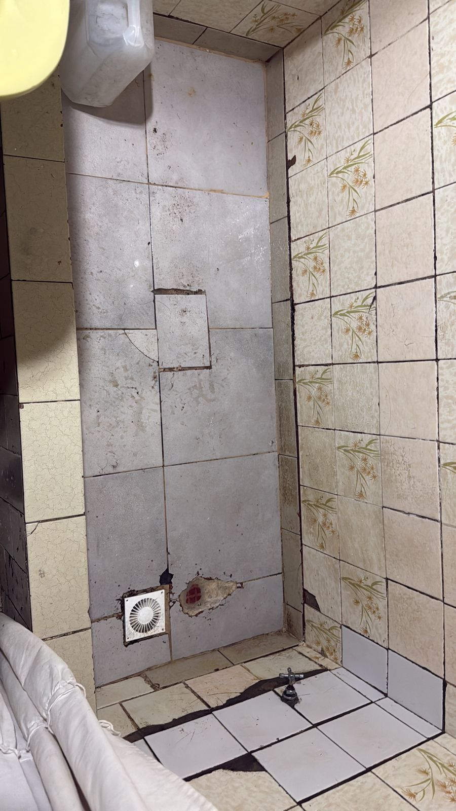
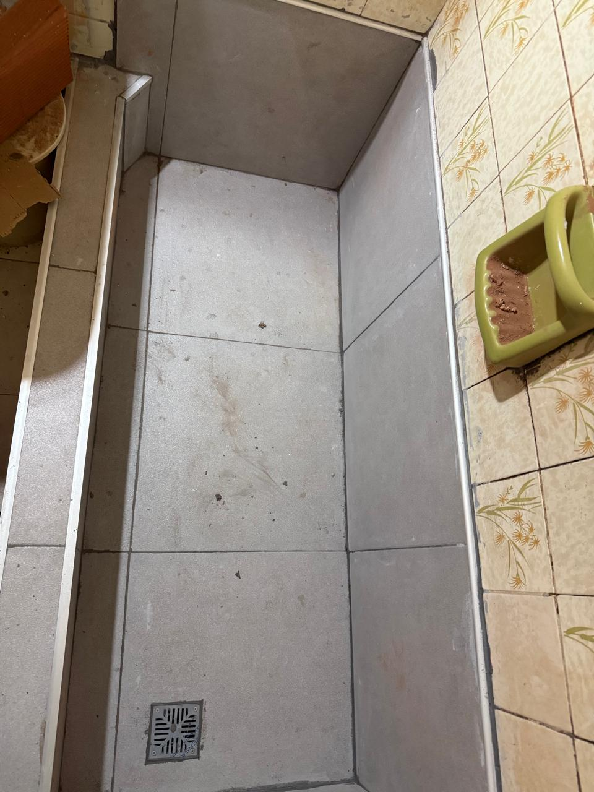

ANTES · 08.06.2026 IMG · 01.ALa filtración hacia el departamento inferior tenía su origen en el baño superior. La impermeabilización original estaba vencida hasta la carpeta: ya no quedaba barrera hídrica. Con el revestimiento dañado, el agua llegaba directamente a la losa en cada uso.
Se atacaron todos los focos de filtración del baño superior. Resuelta la fuente, el departamento inferior queda sin riesgo de filtración por esta causa.

ANTES · 08.06.2026 IMG · 04.A
DESPUÉS · 17.06.2026 IMG · 04.BEl baño superior pasó de tener la losa expuesta al agua a contar con un sistema completo de impermeabilización: barrera hídrica, carpeta nueva, revestimiento con adhesivo flexible, juntas selladas y la instalación sin pérdidas. Las cuatro causas que podían originar la filtración hacia el departamento inferior, detectadas en el relevamiento, quedaron resueltas y eliminadas.